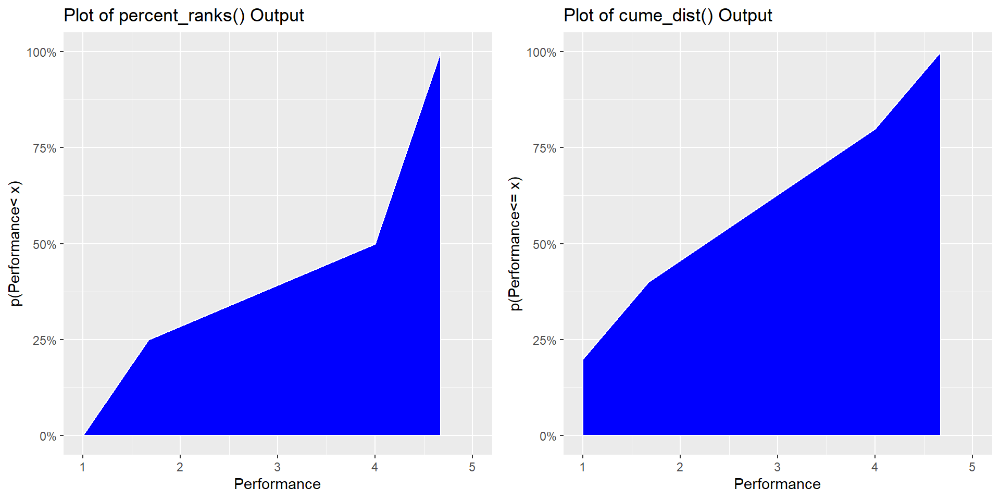

4.7 group_by(): Grouping Data Frames
- Sometimes, when working with data we want to perform some operation within a grouping variable.
- For example, the participants responding to this survey report to different managers.
- We may be interested in creating a new column of data that contains the work-groups’ average performance.
- group_by() can be used in tandem with mutate() to apply a function within columns clustering on groups
4.7.1 group_by Structure
group_by(data, grouping_variable, …)
- group_by() takes the common dplyr structure - define the data and then define the transformation.
- The transformation in this case simply defines the grouping variable.
- If multiple grouping variables are provided, the data is grouped by unique combinations of all grouping variables.
- Note that this function is similar to rowwise() in that no physical change happens to the data - it only affects how later functions act the object.
- Because of this, group_by() is rarely (dare I say never) used without being accompanied by other functions such as mutate() or summarise() (to be covered in Section ??)
- Also, just like rowwise(), in order return the data set to its ungrouped form it is necessary to call the ungroup() function after finishing grouped manipulations.
4.7.2 Using group_by()
- The survey data has been joined with information regarding employees managers.
- We can now calculate each employee’s team’s average performance, conscientiousness, and the number of teammates who responded in the data.
- While I only illustrate how to use group_by() with the pipe operator, if for some reason you wanted to use a single group_by() call instead of a chain, it can be done.

Example 4.13 Using group_by() to create team level variables and n() to create group size variables
ex_data%>%
group_by(Manager)%>%
mutate(team_cons = mean(cons, na.rm = TRUE), team_perf = mean(cons, na.rm = TRUE), team_size = n())## `mutate_if()` ignored the following grouping variables:
## Column `Manager`
Example 4.14 add_count() is a nice alternative, to the group_by()%>%mutate() chain if your goal is to simply add a grouped frequency variables to the data frame.
ex_data%>%
add_count(Manager)## summarise(): Creating Data Summaries {#sum}
- While creating grouped variables is sometimes necessary for analyses, often we simply want to describe properties of our data.
- summarise() is especially useful for this because it applies a function across rows of data to create a single value.
- If the data is grouped, there is a value returned for each group.
4.7.3 summarise() Structure
summarise(data, summary_var = function, …)
- Following the consistent dplyr structure, summarise() requires that you first specify the data and then a transformation.
- The transformation in summarise takes a similar form as mutate().
- The left hand side of the equation defines the name of a new summary variable and the right hand side defines a function or operation.
- The function should return a single value (i.e., mean() or sd()).
4.7.4 Using summarise()
- Let’s create a summary table for the overall sample as well as each team
Example 4.15 Using summarise() to create a summary table for the entire survey data frame
ex_data%>%
summarise(mean_cons = mean(cons, na.rm = TRUE), mean_perf = mean(perf, na.rm = TRUE),
sd_cons = sd(cons, na.rm = TRUE), sd_perf = sd(perf, na.rm = TRUE))
Example 4.16 Using group_by() and summarise() to create a summary table for different work groups
ex_data%>%
group_by(Manager)%>%
summarise(team_cons = mean(cons, na.rm = TRUE), team_perf = mean(perf, na.rm = TRUE),
sd_cons = sd(cons, na.rm = TRUE), sd_perf = sd(perf, na.rm = TRUE))
Example 4.17 count() is a nice alternative to the group_by()%>%summarise() chain if your goal is simply to describe grouped frequencies.
ex_data%>%
count(Manager)